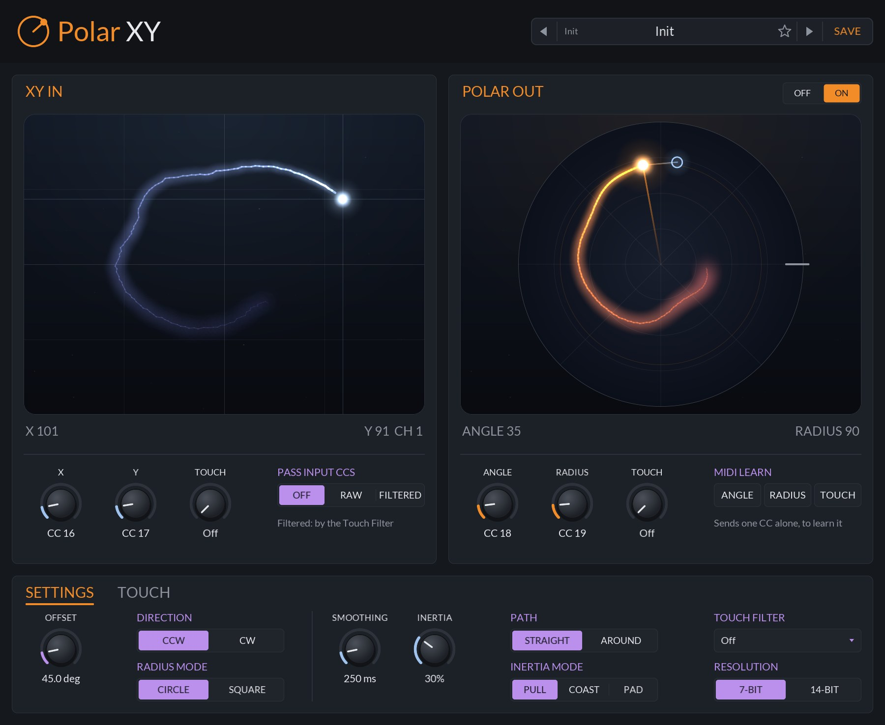
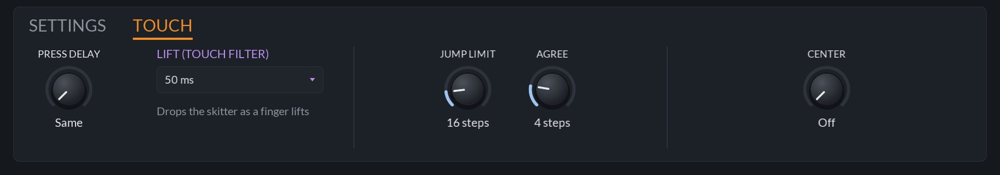
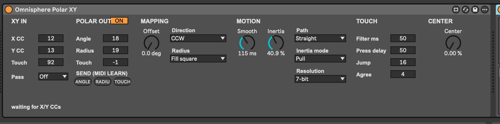
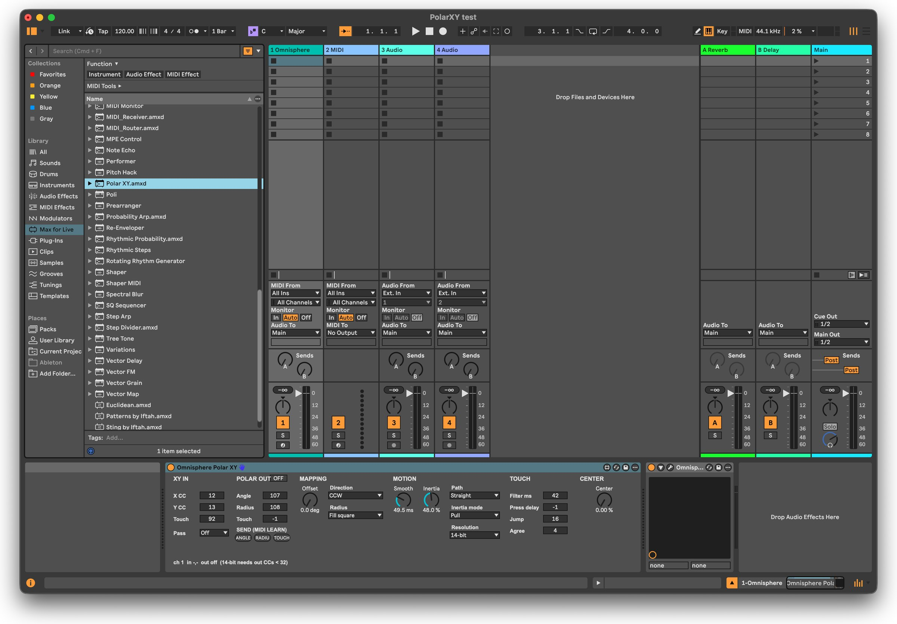
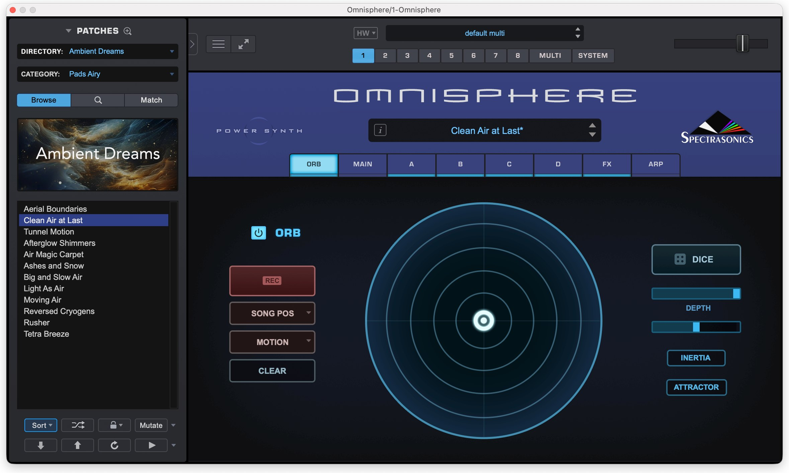
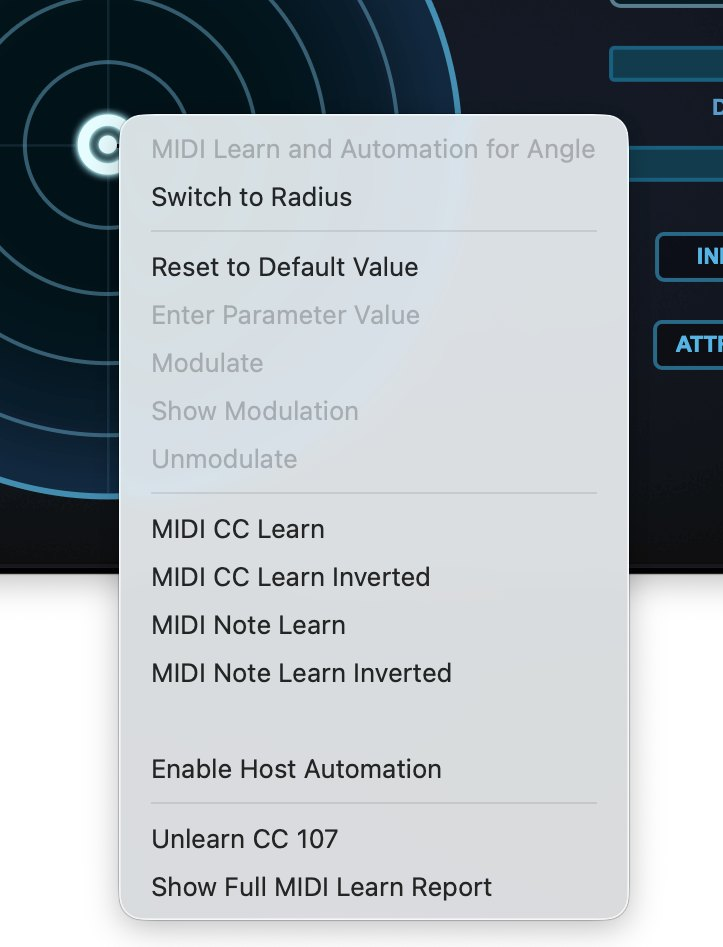
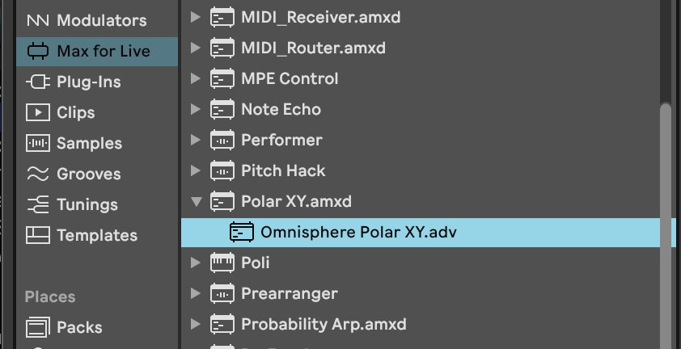
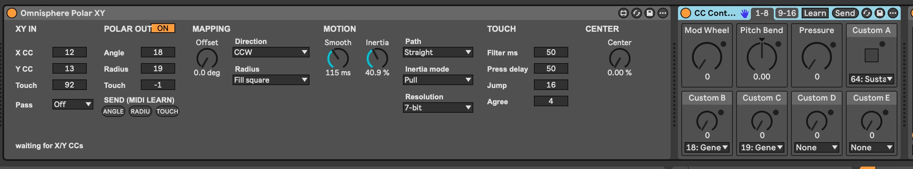

Chapters 2 and 3 get you installed and steering the Orb in a few minutes. Chapter 4 tours the panel, and Chapter 5 explains how an X/Y position becomes an angle and a radius, which is the quickest way to understand what every control does. Chapters 6 to 9 cover the controls section by section. Chapter 10 is for Ableton Live: the Max for Live device, its setup, and MIDI-learning the Orb in Omnisphere 3. Chapter 11 lists the default CCs of some popular X/Y controllers and has ready-made setups. The appendix lists every parameter with its range and default, plus specifications and troubleshooting.
Throughout the manual, control names are set in bold and panel labels as they appear on screen, such as INERTIA MODE. Where the Max for Live device labels a control differently, the device's label follows in brackets, such as Smoothing (Smooth).
A small MIDI effect that turns any X/Y controller into a steering wheel for the Orb in Omnisphere 3.
The Orb in Omnisphere 3 is a circle. Where its dot sits is described the way a radar would: an angle round the circle and a radius out from the centre. Omnisphere lets you MIDI-learn each of those to a CC. An X/Y pad, a joystick or a touch controller doesn't speak that language: it sends one CC for left and right and another for up and down. Learn those straight onto the Orb and pushing the stick right turns the Orb instead of moving it right.
Polar XY sits in front of Omnisphere and does the translation. It listens for your controller's two CCs, works out where on the circle that point is, and sends the angle and the radius on two CCs of their own, ready to MIDI-learn onto the Orb. Push right and the Orb goes right. Circle the stick and the Orb circles. Everything else on the MIDI channel (notes, pitch bend, other CCs) passes straight through.
Around that conversion are the controls that make it feel good: Smoothing and Inertia give the Orb weight so it glides, swings and coasts; a Touch Filter cleans up the skitter a resistive pad makes when a finger presses and lifts; and 14-bit output takes the stairs out of a slow sweep.
In Bitwig Studio, REAPER or any host that loads CLAP note effects, use the CLAP. In Ableton Live, use the Max for Live device (Chapter 10): Live doesn't load CLAPs, and won't put a VST3 in front of an instrument on the same track. The VST3 is for other hosts that can route a plug-in's MIDI output on to the next device.
Polar XY ships in the JClap bundle as a CLAP, a VST3 and a Max for Live device.
| CLAP | VST3 | |
|---|---|---|
| macOS | ~/Library/Audio/Plug-Ins/CLAP | ~/Library/Audio/Plug-Ins/VST3 |
| Windows | C:\Program Files\Common Files\CLAP | C:\Program Files\Common Files\VST3 |
| Linux | ~/.clap | ~/.vst3 |
The plug-ins are ad-hoc signed but not notarized, so macOS quarantines files downloaded through a web browser and some hosts (Bitwig among them) silently skip them. Clear the flag once after copying:
xattr -dr com.apple.quarantine ~/Library/Audio/Plug-Ins/CLAP/*.clap ~/Library/Audio/Plug-Ins/VST3/PolarXY.vst3
Polar XY works on MIDI, not audio, so it goes on the Omnisphere track, in front of Omnisphere. Your controller's MIDI reaches Polar XY first; the two X/Y CCs are swallowed and turned into the angle and radius CCs, and everything else carries on to Omnisphere unchanged. No extra tracks or MIDI routing are needed.
The Max for Live device is installed differently: see Chapter 10.
From an empty slot to steering the Orb, in Bitwig Studio. For Ableton Live, skip to Chapter 10.
Every control has a tooltip. Hover over anything on the panel for a one-line reminder of what it does.
Input on the left, output on the right, and the settings that shape the journey between them along the bottom.
XY IN shows the last X/Y position received, with its channel, and POLAR OUT the angle and radius sent for that channel. Angle 0 is marked by the tick on the right of the circle. The numbers under each view read the same thing out: X, Y and CH on the left, ANGLE and RADIUS on the right (a dash until both axes have arrived). Comparing the two views shows exactly what Offset and Direction are doing.
Both views are small night skies. The input dot and the output orb leave a trail of ink that drifts and fades behind them, so you can see the path a glide took (straight across, or round the circle) and Inertia swinging it past the target and back. The orb is drawn where the output really is, between the CC steps. While Smoothing or Inertia hold it back, a faint band ties it to a blue ring showing where the controller is pointing it.
Click or drag in XY IN and that channel goes there just as if the controller had sent it, gliding with Smoothing and Inertia like any other move (and, with Pass Input CCs on, sending the X/Y CCs on too). The pad isn't rounded to CC steps, and its moves always get at least 40 ms of smoothing, so the Orb follows the mouse evenly. While the mouse is down it has that channel, and the controller's X/Y on it are ignored; let go and the controller takes over with its next move. Double-click to put it back in the centre. Before any CC has arrived the pad drives channel 1.
Every knob, switch and menu is a host parameter, so everything can be automated. Knobs work the same everywhere on the panel:
| Action | On a knob |
|---|---|
| Drag up / down | Change the value. A popup shows the value while you drag. |
| Shift + drag | Fine adjustment. |
| Scroll wheel | Step the value up or down. |
| Right-click | Menu with Reset to default and Enter value… to type an exact number, such as a CC. |
The preset bar in the header steps through presets with its arrows, lists them when you click the name, and stars favourites. SAVE stores the current settings as your own preset; it appears under User in the menu. The factory bank has two: Init, with every setting at its default, and Geren, tuned for a resistive pad (Chapter 11). Settings are also saved with your project.
| macOS | ~/Library/Application Support/PolarXY/Presets |
| Windows | %APPDATA%\PolarXY\Presets |
| Linux | ~/.config/PolarXY/Presets |
The panel is 900 × 738 at 100%. Right-click any empty part of the panel and choose UI Size to scale it to 75%, 100%, 125%, 150% or 200%. The same menu has Check for Updates.
The same point, described two ways: how far across and how far up, or which way and how far out.
Your controller sends a position as two numbers from 0 to 127, with 64 in the middle: X grows to the right and Y grows upward. Polar XY treats 64, 64 as the centre of the Orb. The radius is how far the point is from the centre: 0 there, 127 at the edge. The angle is which way the point lies, starting from straight right and turning counter-clockwise, in 127 steps for a full turn.
Everything that isn't one of the input CCs passes straight through: notes, pitch bend, aftertouch, other CCs, clock. The input CCs themselves are swallowed, unless Pass Input CCs sends them on as well (Chapter 8). If X and Y In are set to the same CC, or Angle and Radius Out are, nothing is converted and the input passes through; the panel shows a warning.
Spectrasonics doesn't document where the Orb's angle 0 sits or which way it turns, so Polar XY makes both settings: Angle Offset and Direction. If the Orb's dot lands rotated or mirrored from your controller, adjust those (Chapter 6).
Which CCs come in and go out, and how the controller's square lines up with the Orb's circle.
| Control | Range | Default | What it does |
|---|---|---|---|
| XM4L · X CC | CC 0–127 | CC 16 | The CC your controller sends for left and right. |
| YM4L · Y CC | CC 0–127 | CC 17 | The CC your controller sends for up and down. |
| TOUCHM4L · Touch | Off, CC 0–127 | Off | The CC a touch pad sends while a finger is down. Optional; see Chapter 8. On the Max for Live device, −1 is Off. |
Input takes 14-bit CCs too, with nothing to set. When an input CC is below 32, a fine value on that CC + 32 (sent after the main one, as 14-bit controllers do) places the axis between the CC steps. A 7-bit controller never sends them, so nothing changes for one.
| Control | Range | Default | What it does |
|---|---|---|---|
| ANGLEM4L · Angle | CC 0–127 | CC 18 | The angle goes out on this CC, for the Orb's angle. |
| RADIUSM4L · Radius | CC 0–127 | CC 19 | The radius goes out on this CC, for the Orb's radius. |
| TOUCHM4L · Touch | Off, CC 0–127 | Off | Sends the touch on, as 127 and 0. Leave it Off for Omnisphere. |
| OFF / ONM4L · POLAR OUT | Off, On | On | The switch in the POLAR OUT title. Off sends no angle or radius at all (Chapter 8). |
| Control | Range | Default | What it does |
|---|---|---|---|
| OFFSETM4L · Offset | 0–360° | 0° | Rotates the angle. Turn it until the Orb's dot sits on the same side as your controller. |
| DIRECTIONM4L · Direction | CCW, CW | CCW | Which way the angle counts. Flip it to CW if the Orb goes round the opposite way to your controller. |
| RADIUS MODEM4L · Radius | Circle, Square | Circle | Circle (Clamp to circle) stops the radius at the edge of the circle, so the corners are no further out than the edges. Square (Fill square) makes the whole edge of the square full radius. |
Joysticks move in a circle, so Circle fits them. On a square pad, Circle means the edges reach full radius only at their middles; Square lets you reach full radius by pushing to any edge, at the cost of the corners and edges feeling the same.
MIDI-learning an Orb control is awkward with an X/Y controller, because a controller never moves just one CC: Omnisphere learns whichever one gets there first. The ANGLE, RADIUS and TOUCH buttons under MIDI LEARN each send that output's CC alone, once, at the value last sent on it (64 before anything has been sent; TOUCH as it stands, or released if nothing has been sent), so the learn picks up exactly that CC. At 14-bit, only the main (MSB) CC is sent, which is the one to learn. TOUCH needs a Touch Out CC set.
On the Max for Live device these are the SEND (MIDI LEARN) buttons. Typing a number into the device's Angle, Radius or Touch Out box and pressing Enter sends the same way, even when the number is the one already there (Chapter 10).
By default the Orb jumps to wherever the controller is. Motion makes it travel there instead, with as much weight as you like.
With Smoothing or Inertia up, Polar XY sends a stream of in-between CCs as the Orb travels (one step every 32 samples, or every 4 ms on the Max for Live device, and only when a value changes) until it arrives. Each MIDI channel moves on its own. The first position on a channel is jumped to, as there's nowhere to glide from.
| Control | Range | Default | What it does |
|---|---|---|---|
| SMOOTHINGM4L · Smooth | 0 ms – 2 s | 0 ms | Roughly how long the Orb takes to glide to the controller's position. |
| INERTIAM4L · Inertia | 0–100% | 0% | Gives the Orb weight. The heavier it is, the slower it gets going and the further it swings past the target before settling. At 100% it swings for about 5 s; the low end of the knob stays light. |
With Inertia up, the Orb doesn't stop when the controller does (or when you let go of the pad). It carries on the way the controller was going, slowing down over a couple of seconds at 100%, and bounces off the edge. It settles wherever it runs out of speed, and the controller's next move picks it up from there. A jump from rest has no speed to carry, so it settles on the spot.
| Setting | What moves |
|---|---|
| Straight | Glides across the pad in X/Y, so going from one side to the other passes through the centre. |
| Around | Moves the angle and radius on their own, so the Orb travels round the circle. The angle keeps counting past a full turn, so stirring the controller with some Inertia sets the Orb whirling, and it carries on past where you stop. A radius that swings or coasts in past the centre comes out the other side rather than waiting there. |
INERTIA MODE (Inertia mode) picks how the Orb follows the controller once it has weight.
| Mode | How it follows |
|---|---|
| Pull | The default. The Orb is drawn to where the controller is, swinging past and settling as described above. |
| Coast | Only the controller's movement moves the Orb. While the controller moves, the Orb picks up its speed and direction (slower the heavier it is). Once the controller holds still it has no say at all: the Orb coasts on, slows to a stop and stays there. Where the controller is doesn't matter, so the Orb can end up anywhere. |
| Pad | Treats the controller like a laptop trackpad, for a touch X/Y controller used as a chaos pad. Touching down doesn't move the Orb, wherever the finger lands. Dragging moves it by as much as the finger moves, from wherever it is. Letting go mid-drag flings it on, gliding and bouncing off the walls, with Inertia setting how far (at 0% it stops where you let go). Touching again catches it. With Path on Around, dragging across turns the Orb (a full sweep of the pad is a full turn) and dragging up and down changes the radius. |
In Pad mode, a controller that jumps back to the centre when released is fine: any big jump counts as a finger landing or lifting, not as a drag.
A resistive pad lies for a few milliseconds every time a finger lands or lifts. Touch Filter finds those moments and throws them away.
A resistive X/Y pad reads its position through the finger's contact. For a few milliseconds while the finger presses down, and again while it lifts off, the contact is light and the readings are wrong: they skitter toward an edge or the centre, and the Orb jumps there and back. Smoothing hides that by smearing it into every move. Touch Filter instead finds the edges of each touch and drops them, leaving the rest of the movement exactly as it came.
TOUCH FILTER (Filter ms) is a time: pick 10, 20, 40, 50 or 60 ms from its menu, or Custom for any time up to 100 ms. Off (0) passes everything as it comes. Use the shortest time that stops the skitter. It costs that much latency (plus the press at the start of each touch), but it never smears a move. The panel's own XY pad doesn't go through it.

The TOUCH tab, next to SETTINGS at the bottom of the panel, tunes the filter. On the Max for Live device these are in the TOUCH section.
| Control | Range | Default | What it does |
|---|---|---|---|
| PRESS DELAYM4L · Press delay | Same, 0–100 ms | Same | How long a new touch's press is held back. Same follows Touch Filter. On the device, −1 is Same. |
| JUMP LIMITM4L · Jump | 8–64 steps | 16 steps | How far one reading may move before it has to wait for a second to agree. It's measured from the last reading and from where the finger was heading (its speed and direction carried on), whichever is nearer, so a fast drag that keeps its course passes, and so does a sharp turn back. |
| AGREEM4L · Agree | 1–16 steps | 4 steps | How close two readings must be to agree. |
| CENTERM4L · Center | Off, 0–50% | Off | A zone around the middle that steadies the angle (below). |
CENTER is a zone around the middle, as a share of the radius. Inside it:
The radius always goes out exactly. Try 15 to 25%.
Many pads also send a CC that is on (64 and up) while a finger is down and off when it lifts. Set TOUCH under XY IN to it, and Touch Filter knows the edges of each touch for certain instead of guessing them from jumps:
Until the first touch CC arrives, Touch Filter works as before, so a pad that doesn't send one loses nothing. The touch CC needs Touch Filter on; with it off, the touch CC only goes on to Touch Out.
TOUCH under POLAR OUT sends the touch on, as 127 and 0, in step with the filtered motion: on just before a touch's first position goes out, off once it lifts. Holding the mouse down on the panel's XY pad counts as a touch too.
PASS INPUT CCS (Pass) sends the X/Y CCs (and the touch CC) on as well as converting them.
| Setting | What goes on |
|---|---|
| Off | The default. The input CCs are swallowed; only the angle and radius go out. |
| Raw | The input CCs go on the moment they arrive, exactly as the controller sent them, skitter and all. |
| Filtered | The input CCs go on as Touch Filter lets them through: the same CCs and values, a window later, with each touch's press and lift-off left out and the touch CC in step. With Touch Filter off, this is the same as Raw. |
With Polar Out switched off, no angle or radius goes out at all, so Polar XY can be used purely to clean up a resistive pad's X/Y for something else.
Finer steps for slow sweeps, if the receiving end can use them.
A 7-bit CC gives the angle 127 steps round the circle (about 2.8° each) and the radius 127 steps, so a slow sweep can move in audible stairs. RESOLUTION (Resolution) set to 14-bit sends each value as a standard 14-bit CC pair: the top 7 bits on the output CC, then the bottom 7 bits on that CC + 32. With the defaults, 18 and 19, the fine values also go out on 50 and 51. That is 16,383 steps each.
Start at 7-bit, especially while MIDI-learning. If Omnisphere won't learn the Orb with 14-bit on, switch to 7-bit and learn again (Chapter 10).
The Max for Live version of Polar XY, which sits on the same track as Omnisphere 3, and how to MIDI-learn the ORB with it.
Polar XY works best when it can be placed on the same track as Omnisphere 3. For this purpose, you'll want to use the Max for Live version (requires Ableton Live Suite, or Ableton Live Standard with Max for Live installed).
Live doesn't load CLAPs, and won't put a VST3 in front of an instrument on the same track, which is why there is a Max for Live version. It is the same conversion and motion as the plug-in, with the same settings, each a Live parameter you can automate or map.
There are six sections to the Polar XY Max for Live device.
This portion of the document was prepared using Polar XY version 0.19.3 with Ableton Live Suite version 12.4.16.

Chapters 6 to 9 describe every control in detail. On the device, a Touch value of −1 means off, Filter ms 0 means off, and Press delay −1 means the same as Filter ms.

The line along the bottom of the device shows the last channel's X/Y in and angle / radius out, followed by the device's version (for example ch 1 in 101,91 out 35 / 90 v0.19.3). It reads waiting for X/Y CCs until the X or Y CC arrives, and after a SEND it shows what was sent, such as angle: sent CC 18 = 64 on ch 1, for a few seconds.
As mentioned earlier, the Max for Live version of Polar XY acts as a MIDI effect in Ableton Live. As such, it can be placed on the same MIDI track as Omnisphere 3. Setting the ORB control CCs requires using a "MIDI learn" procedure, which can make setup tricky because there's never a case when an XY controller is only sending a single MIDI CC. Because of this, Polar XY has three dedicated buttons to assist with the MIDI learn process. Set up is easy, but tedious:


You should now be able to move the ORB using your XY control device.

This completes the basic setup of the Polar XY Max for Live device for use with Omnisphere 3. To avoid having to repeat this procedure each time you use Polar XY, load the preset you've created. It will appear beneath the Polar XY.amxd device in your Max for Live device listing.
Sometimes, Omnisphere 3 will refuse to recognize the data coming from the SEND (MIDI LEARN) buttons of the Max for Live device. In those instances, there is a handy workaround.
First, under the MOTION heading in Polar XY, verify that the Resolution is set to 7-bit and try the learn functions above again. In 14-bit mode, Polar XY sends the MIDI data differently, and this may confuse Omnisphere 3.
If Omnisphere continues to be stubborn, the MIDI CC data can be sent from an alternate source. In the Ableton Live Library, under MIDI Effects, locate the CC Control device. Drag this between Polar XY and Omnisphere 3, as shown:

Using the drop-down menus for "Custom B" and "Custom C", select the MIDI CCs you wish to use to control the ORB. Use "Custom B" for the Angle, and "Custom C" for the Radius. In this example, they are set to CC 18 and CC 19, respectively.
Now, repeat the MIDI Learn steps above, except instead of using the SEND (MIDI LEARN) buttons, move the appropriate knobs in the CC Control device. Once the values are learned, you can turn off or remove the CC Control device.
This workaround is written for Ableton Live, but depending on your configuration a similar one may be needed in Bitwig Studio or another host: for the learn, send the angle and radius CCs to Omnisphere from another device or controller, then remove it once Omnisphere has learned them.
The CCs some popular X/Y controllers send out of the box, then starting points for different feels.
These are the CCs each controller sends with its factory settings. Enter the X and Y CCs as Polar XY's X and Y (X CC, Y CC), and the touch CC, if there is one, as TOUCH under XY IN (Touch) for Touch Filter to use (Chapter 8).
| Controller | X CC | Y CC | Z CC | Touch CC |
|---|---|---|---|---|
| Ableton Push 3 | 74 | 75 | N/A | 76 |
| Amptone XY MIDI mini (mode 1) | 12 | 13 | N/A | 92 |
| Korg NTS-3 Kaoss Pad kit (Total FX) | 12 | 13 | 14 | 98 |
| Korg Multi/Poly | 18 | 19 | N/A | 20 |
| Korg nanoPAD 2 | 1 | 2 | N/A | 16 |
Korg nanoPAD 2 defaults will conflict with other default CCs, and should be edited using the Korg Control Editor.
Load Init first, then set what's listed.
The Orb goes exactly where the controller points, the moment it gets there. Good for joysticks and for checking a new setup.
Takes the edges off quick moves without feeling slow. Most controllers want a little of this.
The Orb lags, swings past where you point and settles back, and drifts on when you let go.
Stir the controller in circles and the Orb keeps spinning after you stop, round the circle rather than across it.
Only movement matters: flick the controller and the Orb slides off that way and stops wherever it runs out of speed.
A touch X/Y pad used like a trackpad: drag to push the Orb, let go to fling it off the walls, touch to catch it.
The factory Geren preset, tuned on recordings of an Amptone XY MIDI mini, with its default CCs. For another resistive pad, load it and set the CCs to your pad's.
Use Polar XY just to clean up a resistive pad's X/Y for some other synth, with no angle or radius at all.
Every parameter Polar XY exposes to the host, with its label on the Max for Live device. Everything is automatable.
| Parameter | Device label | Range | Default |
|---|---|---|---|
| X In CC | XY IN · X CC | 0–127 | 16 |
| Y In CC | XY IN · Y CC | 0–127 | 17 |
| Touch In CC | XY IN · Touch | Off (−1), 0–127 | Off |
| Pass Input CCs | XY IN · Pass | Off, Raw, Filtered | Off |
| Polar Out | POLAR OUT · OFF / ON | Off, On | On |
| Angle Out CC | POLAR OUT · Angle | 0–127 | 18 |
| Radius Out CC | POLAR OUT · Radius | 0–127 | 19 |
| Touch Out CC | POLAR OUT · Touch | Off (−1), 0–127 | Off |
| Angle Offset | MAPPING · Offset | 0–360° | 0° |
| Direction | MAPPING · Direction | Counter-clockwise, Clockwise | CCW |
| Radius Mode | MAPPING · Radius | Clamp to circle, Fill square | Clamp to circle |
| Smoothing | MOTION · Smooth | 0 ms – 2 s | 0 ms |
| Inertia | MOTION · Inertia | 0–100% | 0% |
| Motion Path | MOTION · Path | Straight, Around | Straight |
| Inertia Mode | MOTION · Inertia mode | Pull, Coast, Pad | Pull |
| Output Resolution | MOTION · Resolution | 7-bit, 14-bit | 7-bit |
| Touch Filter | TOUCH · Filter ms | Off (0), up to 100 ms | Off |
| Press Delay | TOUCH · Press delay | Same (−1), 0–100 ms | Same |
| Jump Limit | TOUCH · Jump | 8–64 steps | 16 |
| Agree | TOUCH · Agree | 1–16 steps | 4 |
| Center | CENTER · Center | Off (0), up to 50% | Off |
The MIDI learn buttons (ANGLE, RADIUS, TOUCH, and SEND on the device) are not parameters and can't be automated.
| Formats | CLAP 1.2 note effect (features: note-effect, utility). VST3, wrapped by clap-wrapper, listed as an instrument with a MIDI input and output. Max for Live MIDI effect. |
| Platforms | macOS universal (10.15+ Intel, 11+ Apple Silicon), Windows (64-bit), Linux (64-bit). The Max for Live device runs wherever Live Suite or Max for Live does. |
| MIDI | 16 channels, each with its own position and motion. Input CCs swallowed (or passed on); everything else passes through. |
| Conversion | Angle 0–126 (one turn in 127 steps), radius 0–127. Dead zone of about two CC steps around the centre. |
| Resolution | 7-bit, or 14-bit CC pairs (MSB on the CC, LSB on CC + 32) when both output CCs are below 32. 14-bit input read automatically. |
| Motion rate | One step every 32 samples (plug-in), every 4 ms (Max for Live). Only changed values are sent. |
| Latency | None, except Touch Filter, which holds input back by its time. |
| Parameters | 21, all automatable. |
| State | Saved with the host project. User presets are .pxypreset files (Chapter 4). |
| Panel | 900 × 738 at 100%; 75%, 100%, 125%, 150% and 200%. |
| Symptom | What to check |
|---|---|
| Polar XY doesn't appear in my host (macOS) | The download is probably quarantined. See the warning in Chapter 2, then rescan plug-ins. |
| The Orb doesn't move | Check that X and Y In match your controller (the XY IN view or the status line should follow it), that Polar Out is On, and that Omnisphere learned the Angle and Radius Out CCs. In Live, check the track's MIDI From and Monitor settings. |
| Omnisphere learned the wrong CC | Learn with the MIDI learn (SEND) buttons rather than moving the controller. If it still won't take, see When MIDI Learn Doesn't Work in Chapter 10. |
| The Orb is rotated or mirrored | Turn Angle Offset, or flip Direction. |
| The Orb jumps when I touch or release a pad | A resistive pad. Turn on Touch Filter (try 20 to 50 ms), and set Touch In if the pad sends a touch CC. |
| The Orb spins when the controller rests in the middle | Raise Center to 15–25%. |
| 14-bit makes no difference | Both output CCs must be below 32, and the receiving end must read 14-bit pairs. |
| Nothing is converted and a warning shows | X and Y In, or Angle and Radius Out, are set to the same CC. |
| Live: the device's version is old | The status line ends with the version Live loaded. Make sure the newer Polar XY.amxd and polarxy.js are together in the same folder, and remove older copies. |
| Live: the VST3 won't go in front of Omnisphere | Live doesn't allow that. Use the Max for Live device (Chapter 10). |